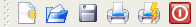

Creates a new document
Opens a document
Opens a recently saved document
Saves the document
Saves the document with the specified format
Prints the document
Make sure the proper print system is selected in the “Print system currently used:” section. This option can be seen after clicking on the Expand button.
Displays a picture of what the printed document will look like.
Opens a dialog box where you can enter information about your chart.
This document information will be displayed in the Konqueror file browser as a tool tip. The tool tips are pop-ups that show the contents of a file when you move your mouse over the file icon.
This feature does not work properly. Do not use it.
Closes the current chart.
Quits KChart
Allows you to specify the chart type.You can also insert titles and change the fonts, with the Wizard.
Table for entering the data.
Dialogs for configuring the chart.
Select graph colors, grid colors and title colors here.
Select font style and size here. The series colors can be selected here also. The series refer to the individual graphs. Each graphed set of data is a series
Select the background color for your graph.
The picture backgrounds do not work at this time
Change the location of the legend box. The color of the legend box can be changed also. The legend box contains the color key to the graph series.
The axes can be turned on or off here.
Not all the features work here.
The perspective for the 3d bar graphs can be set here.
Changes the arrangement of bar graphs.
Enter the titles you want for your graphhere.
Loads a previously saved configuration.
Saves the configuration you set up in Edit Configure.
Loads the default configuration.
Displays the file toolbar for fast access.
Displays the toolbar for the different charting styles (Pie Chart, Bar Chart, Area Chart and so on).
The Settings->Configure Shortcuts... allows you to specify key bindings
Below is an example of how to configure a short cut for opening the chart wizard.
Click on the Custom button.
Next click on the Primary button.
Do Alt Ctrl W and the dialog should disappear. The key binding is now entered.
Pressing the keys Alt Ctrl W now opens the Wizard.
The Settings->Configure Toolbars... Is used to add additional buttons to the toolbars.
To add a button to the File toolbar,
make sure File <KOfficeShell> is displayed in the top combo box.
Click on one of the items in the left hand pane. This item will now have a blue background showing that it has been selected.
Next click on the Right arrow button to place it in the right pane.
Click on Apply and then click on OK
The new Item should be in the toolbar. 
Invokes the KDE Help system starting at the KChart help pages. (this document).
Changes the mouse cursor to a combination arrow and question mark. Clicking on items within KChart will open a help window (if one exists for the particular item) explaining the item's function.
Opens the Bug report dialog where you can report a bug or request a “wishlist” feature.
This will display version and author information.
This displays the KDE version and other basic information.